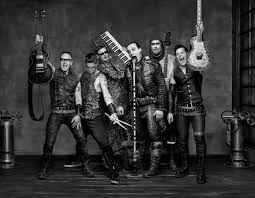
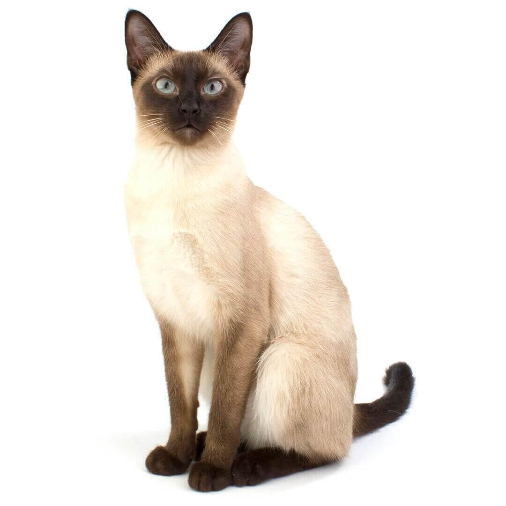
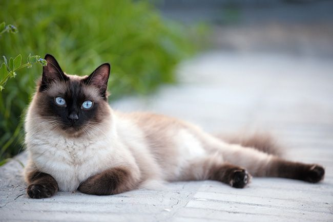

es una banda alemana de metal industrial fundada en 1994 por los músicos
Su música se basa en una corriente surgida en su país en los años 1990 llamada Neue Deutsche Härte del que son su exponente más popular y al que también pertenecen, entre otros, Oomph! y Die Krupps.
Es una gata siames creo pero esta tiene la cara mitad negro mitad blanco
Mi gata se llama Dubalina
 